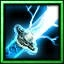
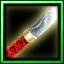
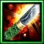
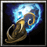
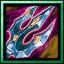

| 物品名稱 | 圖片 | 合成需求和總價格 | 說明 | |
| 舞雷刀(Q) |  | 打刀(1200)+強化鋼(300)+雷之捲(700) = 舞雷刀(2200) | 攻擊+30 攻擊速度+20% [使用]施展分叉閃電，對最多8個目標造成350點傷害，消耗法力100，等待時間20秒 |
|
| 柔軟刀(W) |
打刀(1200)+強化鋼(300)+柔軟鋼(1500) = 柔軟刀(3000) | 攻擊+30，
攻速+15% 70%降低220點物理傷害 |
||
| 金鋼杵(E) |
狂暴鋼(1750) + 杵杖(1100) + 強化鋼(300)= 金鋼杵(3150) | 攻擊+15 智慧+10 攻擊時25%對地面部隊造成2倍傷害 |
||
| 陣太刀(R) |
 | 太刀(1600)+能量鋼(1900)+強化鋼(300) = 陣太刀(3800) | 攻擊+20 敏捷+10 所有能力+10 |
|
| 野太刀(A) |
 | 太刀(1600)+狂暴鋼(1750)+強化鋼(300) = 野太刀(3650) | 攻擊+15 敏捷+10 攻擊時20%造成2倍傷害 |
|
| 長捲(S) |
薙刀(1700)+狂暴鋼(1750)+強化鋼(300) = 長捲(3750) | 攻擊+15 力量+10 攻擊時20%造成2倍傷害 |
||
| 戒杖刀(D) |
法術書(2450)+打刀(1200)+強化鋼(300) =戒杖刀(3950) | 攻擊+30 所有能力+5 攻擊速度+15% [使用]施展緩慢術或自我恢復 緩慢術
[使用]讓一個敵方部隊的移動速度降低50%。
持續10秒
消耗法力100，等待時間20秒 自我恢復
[使用]每秒恢復指定友方部隊50點生命值。 持續20秒 消耗法力250，等待時間20秒 |
||
| 皆朱槍(F) | 長槍(3400)+奮鬥之捲(600)+強化鋼(300)=皆朱槍(4300) | 攻擊+25 |
||
| 禦神法輪(Z) |  | 伏魔輪杖(3000) + 杵杖(1100)+ 強化鋼(300) = 禦神法輪(4400) | 攻擊+25 智慧+40 降低40%法術傷害 |
|
| 斬月槍(X) |  | 長槍(3400)+能量鋼(1900)+強化鋼(300) =斬月槍(5600) | 攻擊+25 力量+20 所有能力+10 |
|
| 脅差(C) | 生命鋼(1200)+法力鋼(900)+打刀(1200)+太刀(1600)=脅差(4600) | 攻擊+45 裝甲+8， 生命+480， 法力+480 |
||
| 十字槍(V) |
薙刀(1700)+洞察寶石(1450)+鋒利短刀(1450)+強化鋼(300)= 十字槍(4900) | 攻擊+50 力量+10， 偵測900範圍隱形單位 |